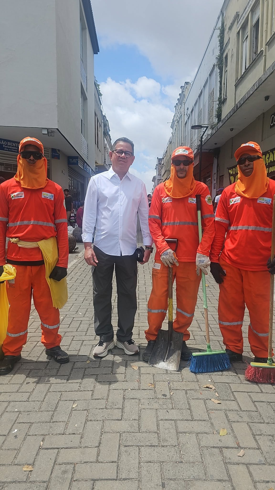
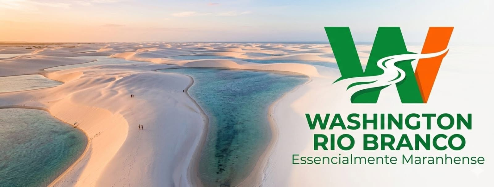
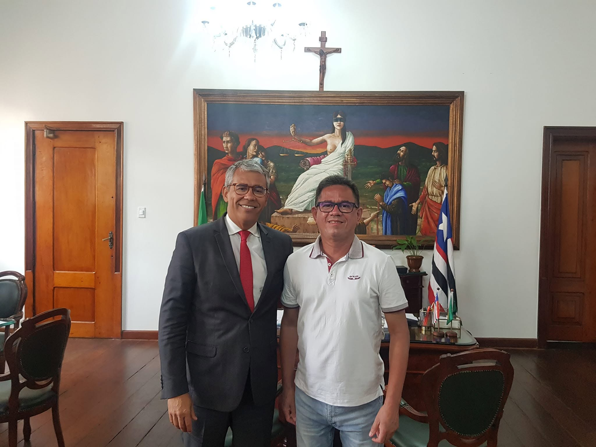

COMPROMISSOS PARA O MARANHÃO
UMA SÓ CAUSA.
18 COMPROMISSOS.
Propostas que unem dignidade, desenvolvimento sustentável e justiça ambiental no dia a dia dos maranhenses.
01
SAÚDE AMBIENTAL
Proteção para comunidades afetadas pela poluição e por riscos ambientais.
- Fiscalizar índices de qualidade do ar, da água e dos ecossistemas aquáticos.
- Defender comunidades rurais próximas a distritos industriais.
- Fortalecer o controle sobre defensivos e a proteção de solos e lençóis freáticos.

01
02
02
EDUCAÇÃO AMBIENTAL E CLIMÁTICA
Educação que prepara crianças, jovens e adultos para construir um futuro sustentável.
- Garantir formação socioambiental crítica em instituições públicas e privadas.
- Defender ações de sustentabilidade e justiça climática no currículo.
- Valorizar professores, escolas e projetos de educação ambiental.
03
SEGURANÇA ALIMENTAR
Mais acesso regular a alimentos de qualidade para o bem-estar físico e mental.
- Monitorar políticas de segurança alimentar e nutricional.
- Incentivar alimentação preventiva de doenças crônicas.
- Fortalecer ações de alimentação saudável na comunidade escolar.

03
04
04
EMPREGO VERDE
Desenvolvimento econômico sustentável, com trabalho e renda para a população.
- Ampliar o uso de energia solar e eólica.
- Valorizar agentes ambientais comunitários.
- Formar mão de obra para a economia de baixo carbono.
05
MEIO AMBIENTE
Defesa permanente dos recursos naturais renováveis e não renováveis do Maranhão.
- Fiscalizar o cumprimento da política ambiental estadual.
- Compatibilizar produção, uso do solo e proteção ambiental.
- Reforçar o licenciamento e a avaliação de impactos ambientais.
05
PARTICIPE